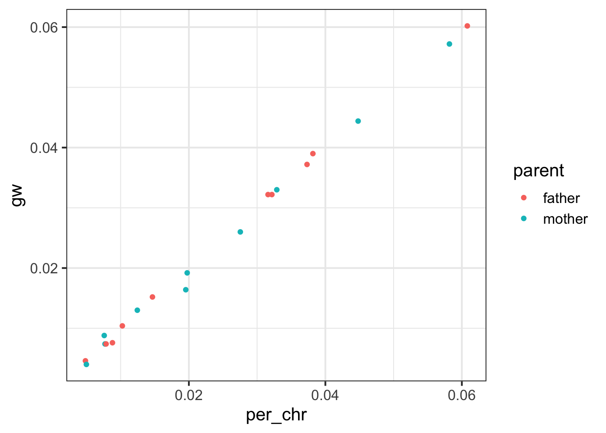
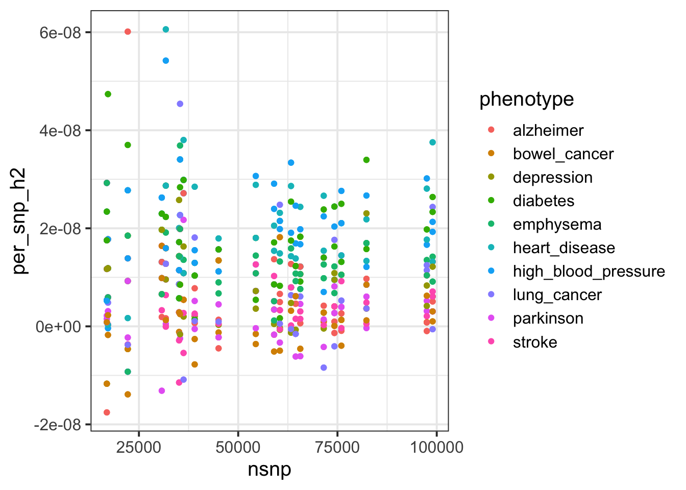
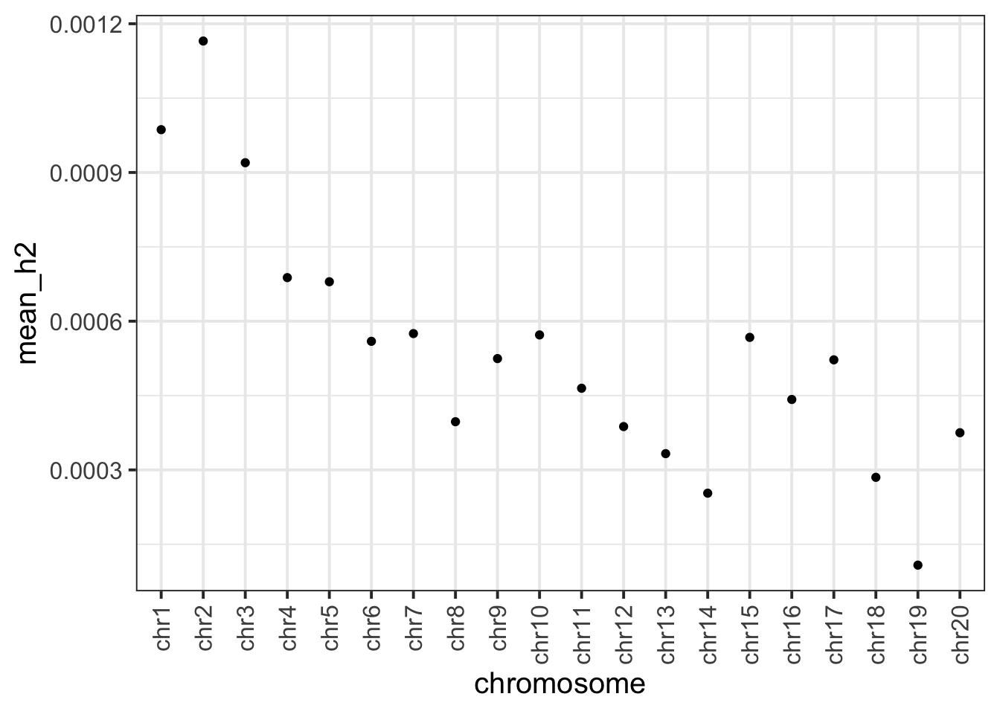
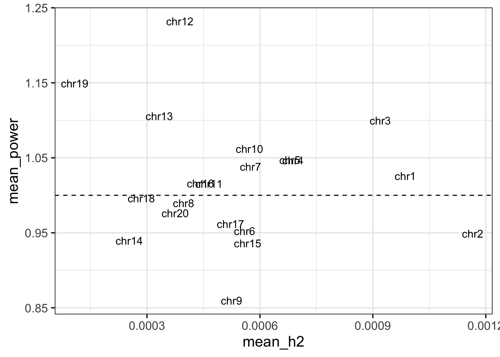
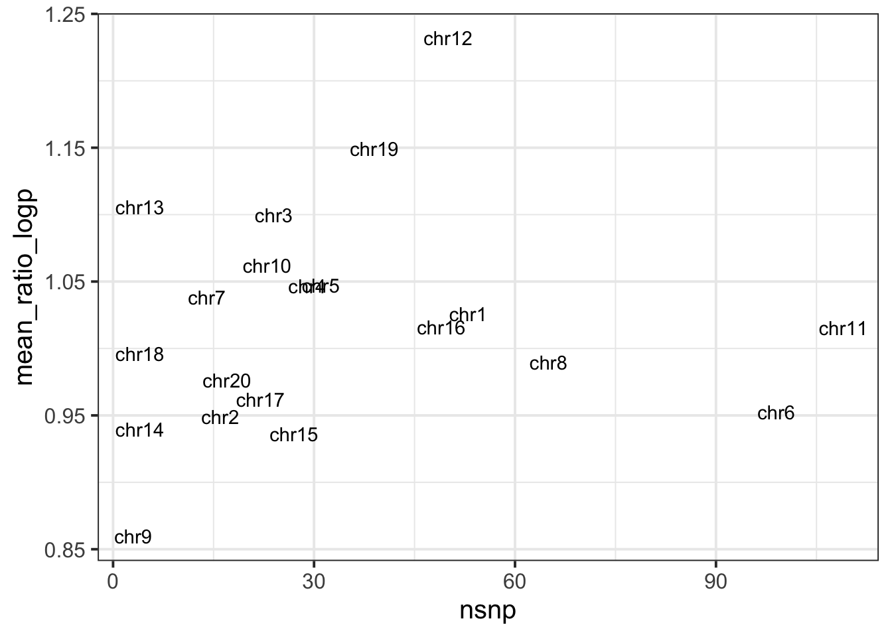
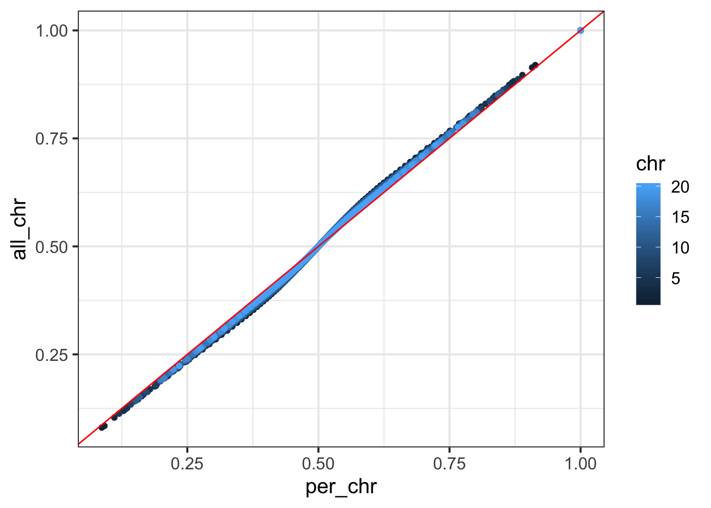
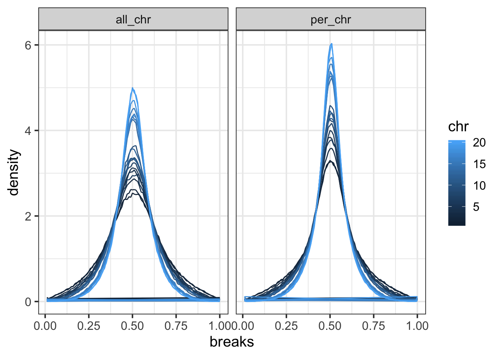
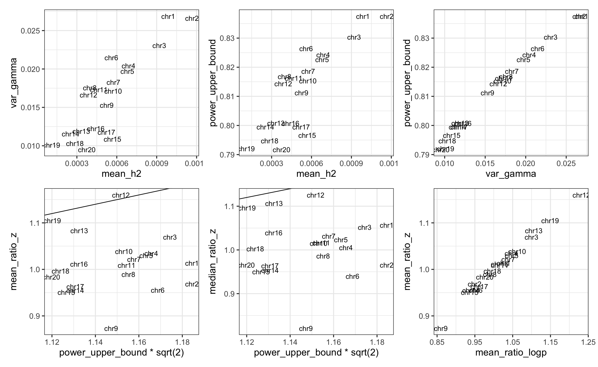
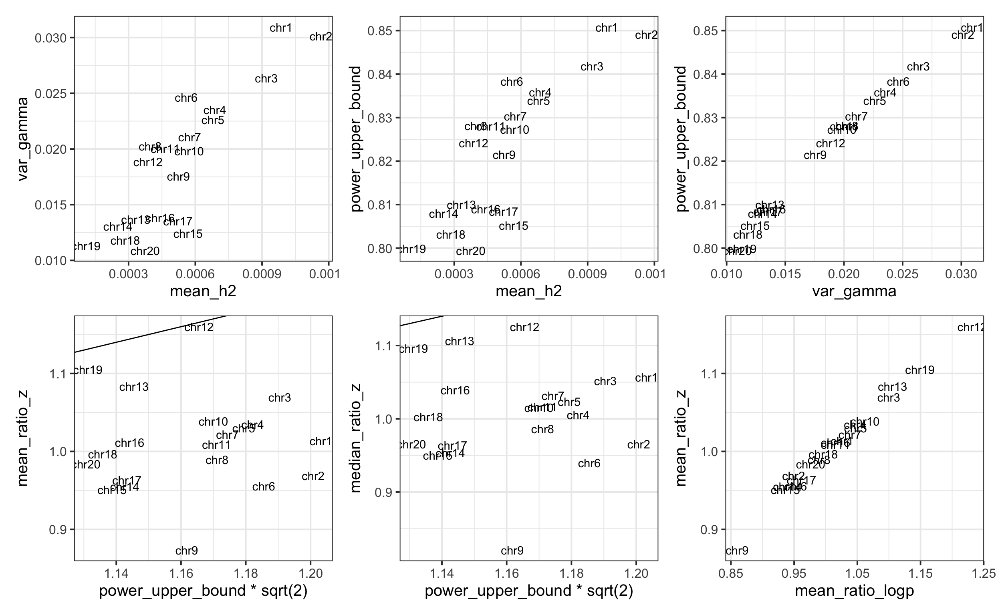

rm(list = ls())
library(pander)
panderOptions('table.split.table', Inf)
library(ggplot2)
library(dplyr)
library(data.table)
library(patchwork)
options(datatable.fread.datatable = FALSE)
theme_set(theme_bw(base_size=15))
set.seed(2020)
get_field_code = function(s) {
unlist(lapply(strsplit(s, '_'), function(x) {x[1]}))
}
get_trait = function(s) {
unlist(lapply(strsplit(s, ': '), function(x) {x[2]}))
}
get_code = function(s) {
stringr::str_remove(s, '.tsv.bgz')
}
get_parent = function(s) {
stringr::str_remove(unlist(lapply(strsplit(s, ': '), function(x) {x[1]})), 'Illnesses of ')
}
get_map = function() {
f = yaml::read_yaml('../scripts/haplotype_imputation/submission_scripts/father_phenotype_no_hypertension.yaml')$col
m = yaml::read_yaml('../scripts/haplotype_imputation/submission_scripts/mother_phenotype_no_hypertension.yaml')$col
df = rbind(
data.frame(phenotype = names(f), phenotype_id = unlist(f)),
data.frame(phenotype = names(m), phenotype_id = unlist(m))
)
df = df %>% mutate(phenotype = stringr::str_remove(phenotype, ' \\([12]\\)'))
df = df %>% distinct()
df = rbind(df, data.frame(phenotype = "Alzheimer's disease/dementia", phenotype_id = 'alzheimer'))
rbind(df, data.frame(phenotype = "High blood pressure", phenotype_id = 'high_blood_pressure'))
}
.get_nsnp = function(filename) {
cmd = paste0('cat ', filename, ' | grep "After merging with regression SNP LD,"')
out = system(cmd, intern = TRUE)
nsnp = as.numeric(stringr::str_match(out, 'LD, ([0-9]+) SNPs remain')[, 2])
nsnp
}
.get_h2 = function(filename) {
cmd = paste0('cat ', filename, ' | grep "Total Observed scale h2"')
out = system(cmd, intern = TRUE)
tmp_ = stringr::str_match(out, 'Total Observed scale h2: ([-0-9e.]+) \\(([-0-9e.]+)\\)')[, 2:3]
h2 = as.numeric(tmp_[1])
h2_se = as.numeric(tmp_[2])
list(h2 = h2, h2_se = h2_se)
}
parse_ldsc_log = function(logfile) {
nsnp = .get_nsnp(logfile)
h2 = .get_h2(logfile)
data.frame(nsnp = nsnp, h2 = h2$h2, h2_se = h2$h2_se)
}
get_nsnp_per_chr = function() {
dd = list()
for(i in 1 : 22) {
n = read.table(paste0('/Users/yanyul/Desktop/tmp/haplotype-po/eur_w_ld_chr/', i, '.l2.M_5_50'), header = FALSE)$V1[1]
dd[[length(dd) + 1]] = data.frame(nsnp_5_50 = n, chr = paste0('chr', i))
}
do.call(rbind, dd)
}Here we are interested in estimating the per-chromosome heritability of parental illness phenotypes in UKBB (using summary statistics shared by Neale lab).
In this document, we extract these summary statistics and have them organized.
match_df = get_map()
cmd = "cat /Users/yanyul/Downloads/UKBB\\ GWAS\\ Imputed\\ v3\\ -\\ File\\ Manifest\\ Release\\ 20180731\\ -\\ Manifest\\ 201807.csv |grep Illness | grep 'father\\|mother'|grep 'both_sexes' |grep -v adopted | grep -v 'None of the above'|cut -f 2,5 -d ,"
df = fread(cmd = cmd, sep = ',', header = FALSE, col.names = c('phenotype_long', 'filename'))
df = df %>% mutate(id = get_code(filename), phenotype = get_trait(phenotype_long), parent = get_parent(phenotype_long)) %>% left_join(match_df, by = 'phenotype') %>% filter(!is.na(phenotype_id))
df %>% write.csv('../analysis_output/parent_illness_in_neale_lab_ukbb_gwas.csv', quote = FALSE, row.names = FALSE)df = read.csv('../analysis_output/parent_illness_in_neale_lab_ukbb_gwas.csv') # %>% filter(phenotype_id != 'high_blood_pressure')
df_h2 = list()
for(r_idx in 1 : nrow(df)) {
for(chr_idx in c(paste0('chr', 1 : 22), 'gw')) {
filename = paste0('/Users/yanyul/Desktop/tmp/haplotype-po/per_chr_ldsc_output/h2.', df$parent[r_idx], '_', df$phenotype_id[r_idx], '.', chr_idx, '.log')
tmp = parse_ldsc_log(filename) %>% mutate(chromosome = chr_idx, parent = df$parent[r_idx], phenotype = df$phenotype_id[r_idx])
df_h2[[length(df_h2) + 1]] = tmp
}
}
df_h2 = do.call(rbind, df_h2)
df_h2 = df_h2 %>% mutate(from_per_chromosome = sapply(chromosome, function(x) {if(x != 'gw') 'per_chr' else 'gw'}))
df_snp = get_nsnp_per_chr()df_h2 %>% group_by(from_per_chromosome, phenotype, parent) %>% summarize(h2 = sum(h2)) %>% ungroup() %>%
reshape2::dcast(phenotype + parent ~ from_per_chromosome, value.var = 'h2') %>%
ggplot() + geom_point(aes(x = per_chr, y = gw, color = parent))
df_h2 %>% inner_join(df_snp, by = c('chromosome' = 'chr')) %>% mutate(per_snp_h2 = h2 / nsnp_5_50) %>%
ggplot() + geom_point(aes(x = nsnp, per_snp_h2, color = phenotype))## Warning: Column `chromosome`/`chr` joining character vector and factor, coercing into character vector
Conclusion: even thought I got warning saying that there are too few SNPs in regression, the per SNP heritabiltiy does not strongly depend on the number of SNPs in the regression. So, I tend to consider the estimate as reliable.
power_df = read.csv('../analysis_output/gw_check.power.csv') %>% filter(chr <= 20) %>% mutate(chr = paste0('chr', chr)) %>% mutate(chr = factor(chr, levels = paste0('chr', 1 : 22)))
tmp_ = df_h2 %>% filter(from_per_chromosome != 'gw', !phenotype %in% c('alzheimer', 'high_blood_pressure')) %>% mutate(chromosome = factor(chromosome, levels = paste0('chr', 1 : 22))) %>% group_by(chromosome) %>% summarize(mean_h2 = mean(h2)) %>% inner_join(power_df, by = c('chromosome' = 'chr'))
tmp_ %>% ggplot() + geom_point(aes(x = chromosome, y = mean_h2)) +
theme(axis.text.x = element_text(angle = 90, hjust = 1, vjust = 0.5))
tmp_ %>% ggplot() + geom_text(aes(x = mean_h2, y = mean_ratio_logp, label = chromosome)) + ylab('mean_power') + geom_hline(yintercept = 1, linetype = 2)
tmp_ %>% ggplot() + geom_text(aes(x = nsnp, y = mean_ratio_logp, label = chromosome))
Per-chromosome imputation.
df_gamma = list()
df_gamma_var = list()
breaks = 0 : 100 / 100
qbins = 1 : 100 / 100
for(i in 1 : 22) {
tt = fread(cmd = paste0('zcat < ~/Desktop/tmp/haplotype-po/haplotype_impute_otf/chr', i, '.tsv.gz'), header = T)
gamma = tt$prob_z
df_gamma[[length(df_gamma) + 1]] = data.frame(breaks = breaks[-1], density = hist(gamma, breaks = breaks, plot = FALSE)$density, chr_str = paste0('chr', i), chr = i, qbin = qbins, quantile = as.vector(quantile(gamma, probs = qbins)))
df_gamma_var[[length(df_gamma_var) + 1]] = data.frame(chr_str = paste0('chr', i), var_gamma = var(gamma), S = mean(gamma ^ 2 + (1 - gamma)^2), Z = mean(pmax(gamma, 1 - gamma)), chr = i)
}
df_gamma = do.call(rbind, df_gamma)
df_gamma_var = do.call(rbind, df_gamma_var)
df_gamma_var = df_gamma_var %>% mutate(power_upper_bound = Z / sqrt(S))All-chromosome imputation.
df_gamma_all = list()
df_gamma_all_var = list()
breaks = 0 : 100 / 100
qbins = 1 : 100 / 100
for(i in 1 : 22) {
tt = fread(cmd = paste0('zcat < ~/Desktop/tmp/haplotype-po/haplotype_impute_otf_multi_chr/results/no_hypertension.chr', i, '.tsv.gz'), header = T)
gamma = tt$prob_z
df_gamma_all[[length(df_gamma_all) + 1]] = data.frame(breaks = breaks[-1], density = hist(gamma, breaks = breaks, plot = FALSE)$density, chr_str = paste0('chr', i), chr = i, qbin = qbins, quantile = as.vector(quantile(gamma, probs = qbins)))
df_gamma_all_var[[length(df_gamma_all_var) + 1]] = data.frame(chr_str = paste0('chr', i), var_gamma = var(gamma), S = mean(gamma ^ 2 + (1 - gamma)^2), Z = mean(pmax(gamma, 1 - gamma)), chr = i)
}
df_gamma_all = do.call(rbind, df_gamma_all)
df_gamma_all_var = do.call(rbind, df_gamma_all_var)
df_gamma_all_var = df_gamma_all_var %>% mutate(power_upper_bound = Z / sqrt(S))rbind(
df_gamma %>% mutate(impute_scheme = 'per_chr'),
df_gamma_all %>% mutate(impute_scheme = 'all_chr')
) %>% reshape2::dcast(chr + qbin ~ impute_scheme, value.var = 'quantile') %>%
filter(chr < 21) %>%
ggplot() + geom_point(aes(x = per_chr, y = all_chr, color = chr)) +
geom_abline(slope = 1, intercept = 0, color = 'red') # + facet_wrap(~chr)
rbind(
df_gamma %>% mutate(impute_scheme = 'per_chr'),
df_gamma_all %>% mutate(impute_scheme = 'all_chr')
) %>% filter(chr < 21) %>%
ggplot() + geom_path(aes(x = breaks, y = density, color = chr)) + facet_wrap(~impute_scheme)
tmp = df_gamma_var %>% filter(chr <= 20) %>% inner_join(tmp_, by = c('chr_str' = 'chromosome'))
p1 = tmp %>% ggplot() + geom_text(aes(x = mean_h2, y = var_gamma, label = chr_str))
p2 = tmp %>% ggplot() + geom_text(aes(x = mean_h2, y = power_upper_bound, label = chr_str))
p3 = tmp %>% ggplot() + geom_text(aes(x = var_gamma, y = power_upper_bound, label = chr_str))
p4 = tmp %>% ggplot() + geom_text(aes(x = power_upper_bound * sqrt(2), y = mean_ratio_z, label = chr_str)) + geom_abline(slope = 1, intercept = 0)
p5 = tmp %>% ggplot() + geom_text(aes(x = power_upper_bound * sqrt(2), y = median_ratio_z, label = chr_str)) + geom_abline(slope = 1, intercept = 0)
p6 = tmp %>% ggplot() + geom_text(aes(x = mean_ratio_logp, y = mean_ratio_z, label = chr_str))
p1 + p2 + p3 + p4 + p5 + p6
tmp = df_gamma_all_var %>% filter(chr <= 20) %>% inner_join(tmp_, by = c('chr_str' = 'chromosome'))
p1 = tmp %>% ggplot() + geom_text(aes(x = mean_h2, y = var_gamma, label = chr_str))
p2 = tmp %>% ggplot() + geom_text(aes(x = mean_h2, y = power_upper_bound, label = chr_str))
p3 = tmp %>% ggplot() + geom_text(aes(x = var_gamma, y = power_upper_bound, label = chr_str))
p4 = tmp %>% ggplot() + geom_text(aes(x = power_upper_bound * sqrt(2), y = mean_ratio_z, label = chr_str)) + geom_abline(slope = 1, intercept = 0)
p5 = tmp %>% ggplot() + geom_text(aes(x = power_upper_bound * sqrt(2), y = median_ratio_z, label = chr_str)) + geom_abline(slope = 1, intercept = 0)
p6 = tmp %>% ggplot() + geom_text(aes(x = mean_ratio_logp, y = mean_ratio_z, label = chr_str))
p1 + p2 + p3 + p4 + p5 + p6